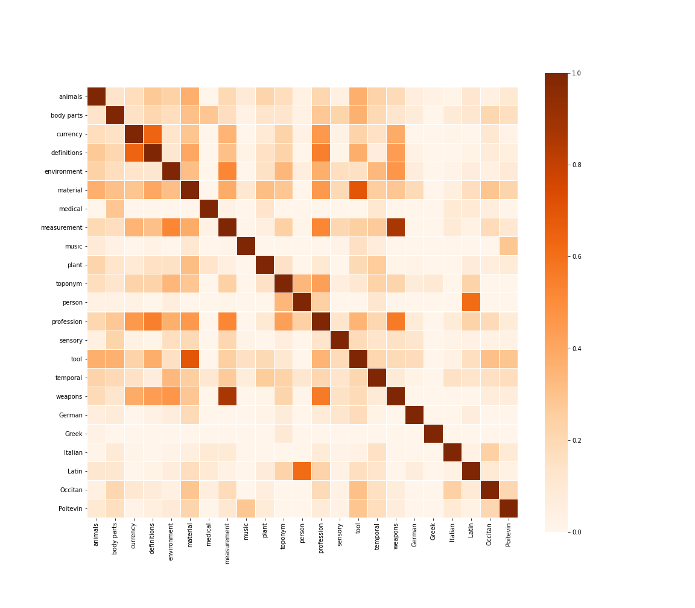
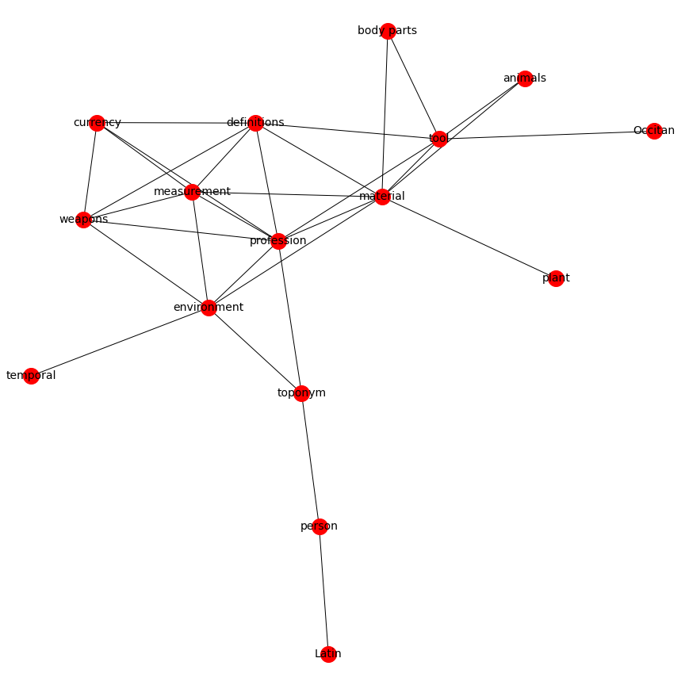

Visualizing Semantic Markup in BnF Ms. Fr. 640

Overview
Data-rich scholarly editions such as Secrets of Craft and Nature in Renaissance France contain valuable editorial annotations one can extract, analyze, and visualize for all sorts of scholarly purposes. In this post, I show how to gather these variable in one big correlation matrix. The matrix, I argue, helps us producing a variety of visualizations not only about the text, but also, in this case, about the editors' horizon of expectations.
The data
The Making and Knowing Project generates a spreadsheet containing updated information about the manuscript’s contents: entry_metadata.csv. The file can be retrieved from the Making & Knowing GitHub repository. Alternatively, one can generate a tailored .csv file using Matthew Kumar’s excellent manuscript-object, a Python version of BnF Ms. Fr. 640.
Getting ready
# import modules
import pandas as pd
import matplotlib.pyplot as plt
import seaborn as sns
import networkx as nx
# load the edition's metadata
df = pd.read_csv('entry_metadata.csv')
Prepare the data
# select the tags you want to correlate
dftags = df[['al_tl', 'bp_tl', 'cn_tl', 'def_tl', 'env_tl', 'm_tl', 'md_tl', 'ms_tl', 'mu_tl', 'pa_tl', 'pl_tl', 'pn_tl', 'pro_tl', 'sn_tl', 'tl_tl', 'tmp_tl', 'wp_tl', 'de_tl', 'ge_tl', 'it_tl', 'la_tl', 'oc_tl', 'po_tl']]
# count comma separated values
tagcount = dftags.stack(dropna=False).str.count(r'[^;\s][^\;]*[^;\s]*').unstack()
# rename columns
cortag1 = tagcount.rename(columns={'al_tl': 'animals', 'bp_tl': 'body parts', 'cn_tl': 'currency', 'def_tl': 'definitions', 'env_tl': 'environment', 'm_tl': 'material', 'md_tl': 'medical', 'ms_tl': 'measurement', 'mu_tl': 'music', 'pa_tl': 'plant', 'pl_tl': 'toponym', 'pn_tl': 'person', 'pro_tl': 'profession', 'sn_tl': 'sensory', 'tl_tl': 'tool', 'tmp_tl': 'temporal', 'wp_tl': 'weapons', 'de_tl': 'German', 'ge_tl': 'Greek', 'it_tl': 'Italian', 'la_tl': 'Italian', 'oc_tl': 'Occitan', 'po_tl': 'Poitevin'})
Correlate
# calculate correlation coefficient
cortag = cortag1.corr()
Visualize
Correlation heatmap
f, ax = plt.subplots(figsize=(16, 14))
ax = sns.heatmap(cortag, linewidths=.03, vmin=0, cmap="Oranges", square=True)

Correlation network
links = cortag.stack().reset_index()
links.columns = ['var1', 'var2','value']
# threshold
links_filtered = links.loc[(links['value'] > .3) & (links['var1'] != links['var2'])]
links_filtered
# create edges
G = nx.from_pandas_edgelist(links_filtered, 'var1', 'var2')
# draw network using Kamada & Kawai's algorithm
plt.figure(3,figsize = (12,12))
nx.draw_kamada_kawai(G, with_labels = True, node_color = 'red', node_size = 400, edge_color = 'black', linewidths = 1, font_size = 14)

Weighted network
Clément Godbarge
Warbrug—I Tatti Fellow
My research interests include early modern history, Italian literature and the digital humanities.